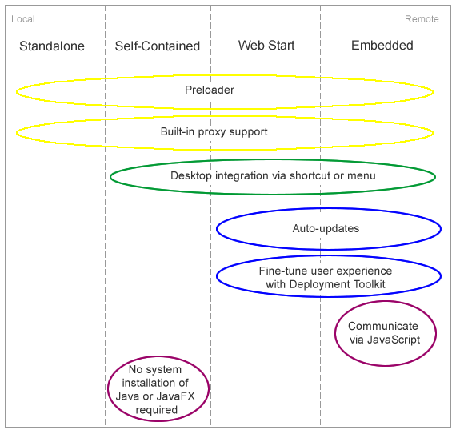

This topic explains the different application execution modes that are available for deploying your Java and JavaFX applications.
One of the main features of the Java application model is that you can write one application and easily deploy it several different ways. The user can experience the same application running on the desktop, in a browser, or starting from a link in a browser.
However, differences exist among the execution modes and need to be considered while developing the application.
This topic contains the following sections:
Table 3-1 describes the execution modes in which Java applications can be deployed.
Table 3-1 Java Execution Modes
| Execution Mode | Description |
|---|---|
|
Run as a standalone program |
The application package is available on a local drive. Users launch it using a Java launcher, such as |
|
Launched from a remote server using Java Web Start |
Users click a link in a web page to start the application from a remote web server. Once downloaded, a Java Web Start application can also be started from a desktop shortcut. |
|
Embedded in a browser |
Java content is embedded in the web page and hosted on a remote web server. |
|
Launched as a self-contained application |
Application is installed on the local drive and runs as a standalone program using a private copy of the JRE. The application can be launched in the same way as other native applications for that operating system, for example, using a desktop shortcut or menu entry. |
Each execution environment has its drawbacks. For example, for remote applications the loading phase can be very long because the application has to be loaded from the network. This is less of an issue for applications that run on a local drive.
Figure 3-1 lists some of the features that behave differently in the different environments. The following sections describe the figure in more detail.
Figure 3-1 Features of Deployment Types
The preloader is a small JavaFX application that receives notifications about application loading and initialization progress. The preloader is used with all execution modes, but depending on the execution mode, the preloader implementation receives a different set of events and optimal behavior may be different.
For example, in self-contained application or standalone execution mode or when launched from a shortcut, the preloader does not get any loading progress events, because there is nothing to load. See Chapter 13, "Preloaders for JavaFX Applications" for information about preloader implementation and differences in behavior.
Properly packaged Java applications have proxy settings initialized according to JRE configuration settings. By default, proxy settings are taken from the current browser, if the application is embedded in a web page. Otherwise, system proxy settings are used. Proxy settings are initialized by default in all execution modes.
Most of the operating systems allow applications to simplify subsequent launches and integrate with the user's desktop by creating a desktop shortcut or adding a link to the programs menu or dock.
Built-in support for desktop shortcuts is available for self-contained and web-deployed applications.
By default, Java applications that are launched from a browser or are embedded in a web page run in a restricted environment, known as a sandbox. Restricting applications to the sandbox provides the following benefits:
Users are protected against malicious code that could affect local files.
Enterprises are protected against code that could attempt to access or destroy data on networks.
Applications that are restricted to the sandbox cannot perform the following operations:
Access client resources such as the local file system, executable files, system clipboard, and printers.
Connect to or retrieve resources from any third-party server (in other words, any server other than the server it originated from).
Load native libraries.
Change the SecurityManager.
Create a ClassLoader.
Read certain system properties. See System Properties for a list of forbidden system properties.
Java applications that run in a browser or were earlier installed from a web page automatically check for updates to the application at the original location where the application is loaded. This check is made every time an application starts, and, by default, the update runs in the background. The application is automatically updated if updates are detected.
For standalone and self-contained applications, you are responsible for handling updates.
The Deployment Toolkit performs two important functions:
Simplifies web deployment of Java applications by managing updates.
Improves the user's experience while waiting for applications to start.
These two functions are connected, because the application startup phase is a critical component of user satisfaction. For example, the Deployment Toolkit verifies that the user has the JRE installed, and if not, it offers to install it before trying to run the application, requiring little effort on the user's part.
The Deployment Toolkit provides a JavaScript API and is only available for applications embedded in a web page or launched from a browser.
For more information about the Deployment Toolkit, see Chapter 19, "Deployment in the Browser."
Applications that are embedded in a web page can communicate with the web page using JavaScript. To initiate communication, a JavaFX application must get the web context from the JavaFX HostServices API. For any other execution environment, an attempt to get a reference to web context returns null.
Example 3-1 shows an example of using JavaScript to go to a new page:
Example 3-1 Using JavaScript to Go to a New Page
final HostServices services = getHostServices();
JSObject js = services.getWebContext();
js.eval("window.location='http://javafx.com'");
For JavaFX applications, see Chapter 16, "Java and JavaScript" for information about using JavaScript to communicate with the browser.
For Java applets, see Invoking JavaScript Code From an Applet for information about using JavaScript to communicate with the browser.
To run Java content, a recent version of the JRE is required. Unless the application is self-contained, the JRE must be installed on the user's system.
If users do not have the required version of the JRE, they are directed to install it. However, situations exist in which system installations of the JRE and the auto-update functionality are not sufficient, for example:
The user does not have admin permissions to install the JRE.
The user requires an older version of the JRE for other applications.
You want to set the exact version of the JRE to be used by your application.
Your distribution channel disallows dependencies on external frameworks.
Deploying your application as a self-contained application resolves these issues. The JRE is included in the application package, and users do not need to install it separately. The self-contained application package can be as simple as a .zip file distribution, or it can be wrapped into an installable package using technology that is native to the target operating system. See the topic Section 5, "Packaging Basics" for more details about self-contained application packages.